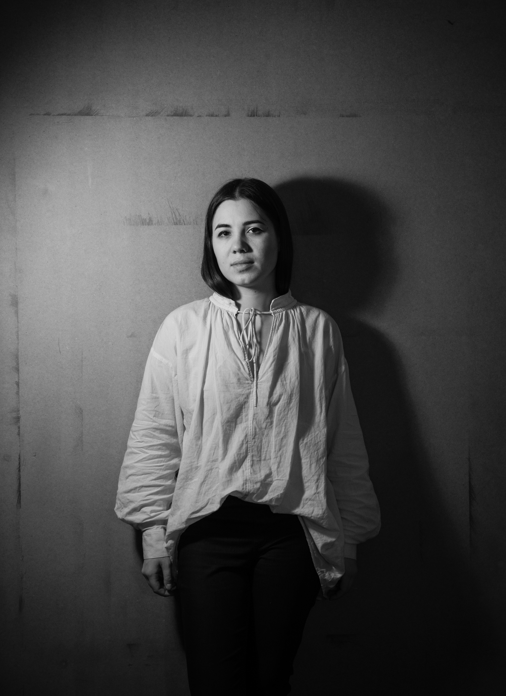

О CЕБЕ
Я, АЛЕКСАНДРА ПЯТНИЦКАЯ - ХУДОЖНИК.
Кроме того, я художник-постановщик, дизайнер широкого профиля, иллюстратор, менеджер проектов и преподаватель академического рисунка и материаловедения. Владею разными (практически, любыми) изобразительными / прикладными техниками и технологиями. Сотрудничаю с компаниями, театрами, производствами и людьми.
ЛИЧНОЕ:
- Родилась в семье художников в 1989 г. в Москве. Выросла и живу там же.
- 2000 - 2006 гг. училась в мастерской Евгения Коробейникова.
- В 2009 г. окончила Московское Государственное Академическое Художественное Училище памяти 1905 года.
- С 2010 г. работаю художником и преподаю.
- В 2013 вступила в Творческий Союз Художников России.
ВЫСТАВКИ:
- 2012 г. “Прага” в частной галерее, Москва
- 2013г. “NIGREDO” персональная выставка (более 30 работ) в “Галерее кино”, Москва
- 2014г. “Memento Mori” выставка-квартирник, Москва
- 2017г. “НОЖНИЦЫ-БУМАГА-ШАР” (совместно с Дмитрием Тыквиным) в галерее “Сарай”, Санкт-Петербург
СОТРУДНИЧЕСТВО:
- Иллюстратор в "Шкулёв Медиахолдинг"
- Мастер-классы для детей и взрослых в проекте “Анимоптикум”
- Бутафор в московском театре “Тень”
- Художник-постановщик и бутафор иммерсивного спектакля “Безликие”, Санкт-Петербург, 2017
- Художник-постановщик и бутафор иммерсивного шоу “Освобождая себя” для биотехнологической компании BIOCAD,Санкт-Петербург, 2018
- Художник-постановщик и бутафор иммерсивного спектакля “Вернувшиеся”,Санкт-Петербург, 2020
- Дизайн интерьера и айдентику кафе «Études», Покровка 38а, Москва 2020
- Мастер-классы по изготовлению масок для «KRASSKY-studio», Москва
- Несколько небольшх иммерсивных и театральных шоу, атмосфера и реквизит. Москва
- Организация художественной фотосессии для буклета «Дядя Ваня». Театр Наций, Москва
- Cоздание для «DECORAZZA» серии декоративных панно и малых скульптурных форм
- Дизайн интерьера для кафе «Чижик-Пыжик», Пушечная улица, Москва 2022
- Художник-постановшик спектакля «Диалог без собеседника», Санкт-Петербург, 2023
- Художник-постановщик иммерсивного спектакля «Девочка со спичками» театр «ДАШКОВ 5», Москва, 2023
- Художник-постановщик иммерсивного ивента-презентации для OPPO, 2024
- Художник-постановщик иммерсивного ивента, празднование 20-летия галереи RUARTS, 2025
- Художник на проекте «ВЫЖИТЬ В...», ТНТ, 2023-2025гг
ДЕЛАЛА:
- Графит-фрески (собственная технология) для дизайн-бюро “Мастерская-5” Сотрудничество с “Мастерская-5” продолжается
- Разное для московского ресторана “Не хочу готовить”
- Витражи и картину для московского ресторана “FF-bar”
- Дизайн тауматропов для “Анимоптикум”
- Айдентику для компании “ULTIMATUM boxing”.
- Эскиз витража “Роза” для частного интерьера.
- Айдентику для московского ресторана “ЧАГИН”
- Айдентику и меню для московского кафе “ШУК”
- Серию меловых портретов для московского клуба “ШАГИ”
- Факсимиле, экслибрисы, визитки, логотипы и личные знаки для фирм и частных лиц (без счёта) - Афиши для спектаклей, фильмов и вечеринок
- Эскизы татуировок
- Эскизы для гравюр и ксилографии
- Каллиграфические надписи по разным материалам